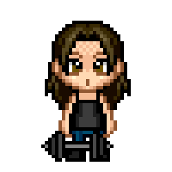

O grze
Gra polega na ukończeniu studiów na Uniwersytecie WSB Merito. Podczas rozgrywki gracz musi kolejno przejść z 2. piętra, przez 1. piętro, aż na parter. Student będzie miał możliwość przechodzenia na niższe piętra po uzbieraniu określonej liczby kryształków (najprawdopodobniej kolejno: 5, 10, oraz 15 kryształków).
Ich zebranie będzie równoznaczne z ukończeniem studiów i opuszczeniem budynku WSB Merito, czyli znalezieniem się w centralnej części planszy.
Po ukończeniu gry gracz otrzymuje tytuł inżyniera lub licencjata
Zasoby
Moneta
w grze nie tylko wiedza ma kluczowe znaczenie, ale również umiejętne zarządzanie zasobami finansowymi. Podczas rywalizacji uczestnicy mogą zarówno zdobywać monety, jak i je tracić.
Kryształki
pełnią kluczową rolę w przejściu rozgrywki. Bez nich uczestnik nie będzie mógł przechodzić na kolejne piętra. Za poprawne odpowiedzi na pytania gracz otrzymuje kryształki.
Reguły rozgrywki
poprawna odpowiedź na daną ilość pytań umożliwia przejście na kolejne piętro
dwóch graczy nie może zajmować tego samego pola
w celu przejścia gry, trzeba przejście przez wszystkie piętra
zbieranie monet, by zapłacić za czesne
start: czesne zapłacenie - przy zaplacie mozliwosc wyboru (hp/szczescie/moneta)
Klasy
Leniuch
"A to trzeba było zrobić?"
Człowiek, który dowiaduje się o wszystkim jako ostatni. Deadliny traktuje jak sugestię, a obecność jak opcję premium.
Statystyki
Mądrala
"To było na slajdzie."
Nigdy nie odpowiada wprost, ale i tak dostaje punkty. Prowadzący kiwa głową, grupa nie wie dlaczego.
Statystyki
Sportowiec
"Byłem na treningu"
Zajęć nie było… znaczy były, ale kolidowały z treningiem. Egzamin? Jakoś się zaliczy.
Statystyki